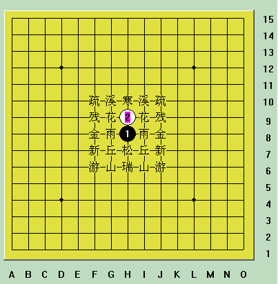
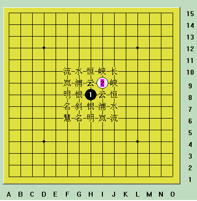

先附上彭建国编写的《彭氏口诀》：
寒星溪月疏星首，花残二月并白莲，
雨月金星追黑玉，松丘新宵瑞山腥。
星月长峡恒水流，白莲垂俏云浦岚，
黑玉银月倚明星，斜月名月堪称朋。
二十六局先弃二，直指游星斜慧星。
溪峡雨云()形相似，子序不同略有别。
说明：
前4句为直指开局，与第1图对应；中间4句为斜指开局，与第2图对应；后4句是指开局时的取舍。
最后2句是本人加的，是指溪月和峡月、雨月和云月棋形相似，只是落子顺序不同，所以可看作同一开局。
黑玉指黑1，白莲指白2。
命名规则：
桂：桂马打，黑1、黑3成马步，“日”字形，以“月”命名。如“溪月”、“水月”。“新月”和“名月”统称桂马打的入门定式。
间：间打，黑1、黑3在一条直线上或一条斜线上，间隔一点，以“星”命名。如“寒星”、“长星”。
连：连打，黑1、黑3在一条直线上或一条斜线上，无间隔，以“月”命名。如“花月”，“云月”“浦月”。
建议初学者先仔细看完下面的贴子后再回来看本贴：
ShowPost.asp?ThreadID=90
助记图：
直指开局(左右对称)：

斜指开局(对角线对称)：

以下内容由网友：屏蔽发在本帖22楼
寒星溪月疏星首，花残二月并白莲，
雨月金星追黑玉，松丘新宵瑞山腥。
星月长峡恒水流，白莲垂俏云浦岚，
黑玉银月倚明星，斜月名月堪称朋。
不知道还有没有人知道这首诗的具体字面意思了：
比较上下两片，其实“白莲”指的是白2，“黑玉”指的是黑1。
寒星溪月疏星首：寒星局、溪月局、疏星局（在直指开局中排在）首位（指第一行，从而构成前三个直指开局D1、D2、D3）；
花残二月并白莲：花月局、残月局的黑3与白莲（白2）并排放置在同一行上；
雨月金星追黑玉：雨月局、金星局（的黑3）从黑玉（黑1）开始依次排列，两者紧靠故称“追”；
松丘新宵瑞山腥：（下一行依次为）松月局、丘月局、新月局（“宵”字去掉宝盖头，拆开即为“三”“月”），“山月”局二字插入“瑞星”局二字之间即为“瑞山月星”，星月二字合并为“腥”。
直指开局按照自左至右，自上至下的顺序排出12种，大家可以参看楼主的图。
星月长峡恒水流：星月（轮换对应）长星局、峡月局、恒星局、水月局、流星局；
白莲垂俏云浦岚：白2（白莲）向下（垂俏）依次排列为云月局、浦月局、岚月局，“俏”字去掉单立人也可拆为“三”“月”二字；
黑玉银月倚明星：黑3在黑1（黑玉）之下依次排列出银月局、明星局，两者相靠故称“倚”；
斜月名月堪称朋：斜月局、名月局排在最后，两个月字合并为“朋”。
斜止开局按照自上至下，自右至左的顺序排出12种，大家可以参看楼主的图。
此外还有直止游星局和斜止彗星局被研究为白必胜开局，增加这两种开局，总共为26种开局，直止花月局和斜止浦月局则被研究为黑必胜开局。
下图由“天元子”制作
天元子：感谢各位朋友多年来对本博的厚爱，本人无以回报，特制作五子棋开局图谱一个，献给广大的五子棋爱好者和多年来对本博给予大力支持的朋友们！
该图谱尺寸为1024*768像素【可右键点击图片另存为】，可做电脑桌面使用，便于刚接触五子棋的朋友下棋的时候随时查对。


其实用多了就自然会了~
等同于d1，d2，d3，。。。d12，i1，i2.。。。i12